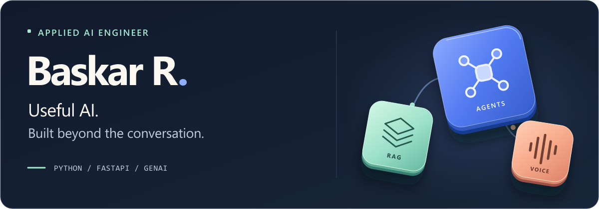

I build RAG assistants, AI agents, and real-time voice systems with Python and FastAPI.
Selected Work
- Omnichannel RAG: hybrid retrieval for website and WhatsApp conversations.
- SareeBot AI: voice commerce connecting calls, inventory, orders, and payments.
- ResumeAI: resume tailoring, document extraction, and PDF generation.
Stack: Python / FastAPI / LangChain / CrewAI / PostgreSQL / Docker
Based in Salem, India. Open to Applied AI and GenAI engineering opportunities.